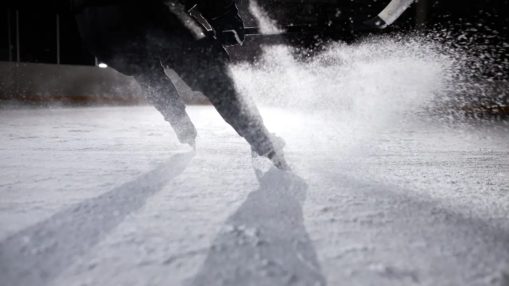
For hockey players, goalies and officials
Stretch between the whistles.
MeFlex Stretch Coach times each stretch for you, with a gentle sound or voice when it’s time to switch. Pick a short routine, press Start, and follow along.
Free to start. No account, and your stretching history stays on your phone.
Three minutes between games.
Made first for hockey officials, adult-league players and goalies.
Referee Between-games Reset
A three-minute standing reset between games on a long night, to keep hips, groin and calves loose.
- High Knee March
- Front Leg Swings
- Side Leg Swings
- Lateral Lunge Shifts
- Knee-to-Wall Ankle Rocks
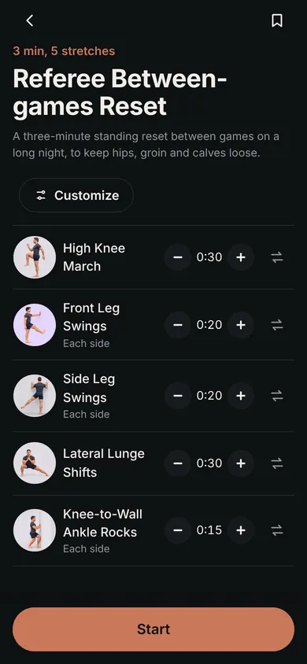
The Between-games Reset in the app. Stretch pictures are AI-generated.
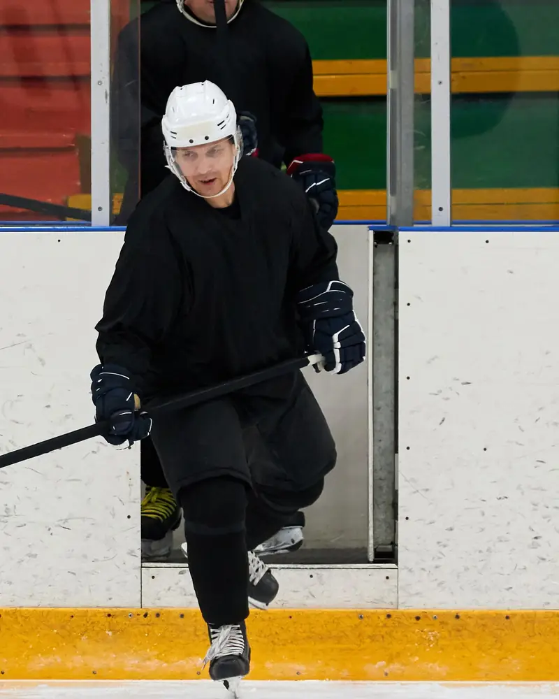
Before and after the game
Moving warm-ups before you skate and cool-downs with holds after, for players and for officials. Routines for goalies are coming.
- Referee Pre-game Warm-upabout 7 minutes
- Hockey Pre-game Warm-upabout 9 minutes
- Hockey Post-game Cool-downabout 7 minutes
There are youth routines too, for young players with a parent, guardian or coach.
Try one stretch right here.
This is the timer from the app: one 30-second Low Lunge. Sound stays off unless you turn it on.
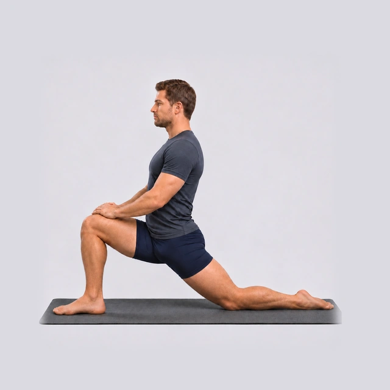
Stretch pictures are AI-generated.
Low Lunge
18 seconds left
Left leg forward
A still of the 30-second Low Lunge timer. With JavaScript on, you can start, pause and finish the hold here.
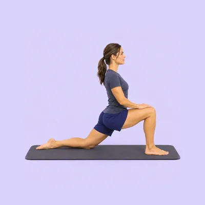
Woman guide- Step one foot forward and lower the back knee onto the mat.
- Stack the front knee over the ankle, shin vertical.
- Rest your hands on the front knee and lift your chest.
- Shift your hips gently forward until you feel the front of the back hip open.
Pad the back knee with a folded towel if it presses.
A stretch should feel like mild discomfort, never pain. Ease off if it hurts.
Stretch library
A picture for every stretch, with a man and a woman guide. Hockey stretches first.
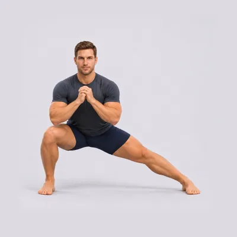
Lateral Lunge Shifts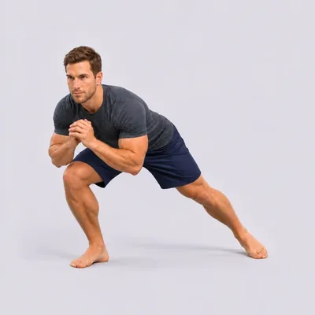
Skating Stance Shifts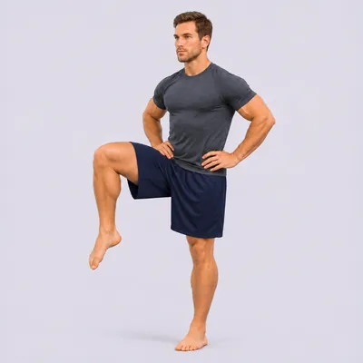
Open the Gate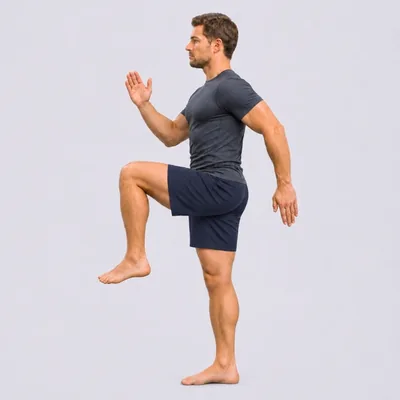
High Knee March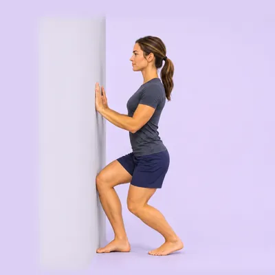
Knee-to-Wall Ankle Rocks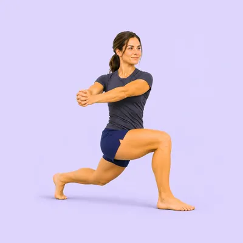
Walking Lunge with Twist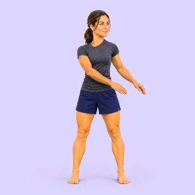
Standing Torso Twists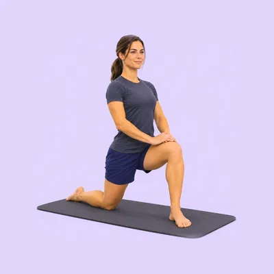
Half-Kneeling Hip Flexor
Stretch pictures are AI-generated.
MeFlex also has everyday and desk routines inside the app: mornings, evenings, desk breaks and more.
How it works
Pick a short routine
Short routines for before, between and after games. Every hold time can be changed with − and +.
Press Start
A timer ring counts down each hold. Once MeFlex has been opened, it works offline too.
Listen for the switch
A soft chime, and an optional voice that reads the stretch’s name. No need to watch the screen.
Still to come
From the maker
MeFlex started as a self-improvement project. I play hockey and referee, and I was getting stiff. Then I heard the same thing from the people I skate and officiate with, and I understood that flexibility is for everyone, not just me. I built MeFlex to make stretching simple enough to keep doing.
Christopher Comprosky
Get a note when MeFlex Stretch Coach reaches the App Store
Not connected yet: this sign-up is switched off and sends nothing.
Until then, it runs in your browser.